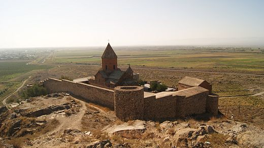

Արարատի մարզ, մարզի կարգավիճակ ունեցող վարչատարածքային միավոր Հայաստանում։ Մարզկենտրոնն Արտաշատ քաղաքն է։ Տարածքը 2096 կմ² է։ Արարատի մարզը գտնվում է Հայաստանի հարավ-արևմուտքում։ Հյուսիս-արևմուտքից սահմանակից է Արմավիրի մարզին, հյուսիսից՝ Երևանին ու Կոտայքի մարզին, արևելքից Գեղարքունիքի և Վայոց ձորի մարզերին, հարավից՝ Ադրբեջանի մասը կազմող Նախիջևանին, իսկ հարավ-արևմուտքից Թուրքիային։
Բնական պայմաններ
Արարատի մարզի հարավարևմտյան եզրին զուգահեռ 6-13 կմ լայնությամբ ընկած է Արարատյան հարթավայրի հարավարևելյան մասը։ Հյուսիսում Երանոսի լեռնաշղթան է։ Հյուսիսային սահմանն անցնում է Ազատ և դրա վտակ Գողթ գետերով։ Հյուսիս-արևելքում Գեղամա լեռնաշղթայի հարավարևմտյան հատվածն է։ Արևելքում Մժկատարի լեռներն են, որից արևմուտք ընկած է Դահնակի լեռնաշղթան, սրանից էլ հարավ գտնվում է Ուրծի լեռնաշղթան։ Մարզի կենտրոնում Երասխի լեռներն են, Կոտուց, Խոսրովասար լեռնագագաթները և այլ լեռնազանգվածներ։ Տարածքի ամենացածր կետը հարավում է՝ Արաքսի հունի մոտ՝ 801 մ։ Ամենաբարձր կետը հյուսիս-արևելքում գտնվող Սպիտակասար լեռնագագաթն է՝ 3555,7 մ։ Տարածքի միայն մոտ 30%-ն է հարթավայրային։ Մարզի խոշոր գետերն են Արաքսը, Հրազդանը, Ազատը, Վեդին։ Համեմատաբար փոքր գետերից են Արածոն, Չորասու հեղեղատարը, Ազատի ու Վեդիի վտակները՝ Քաջառուն (Դարբանդ), Խոսրովը, և այլն։ Արարատյան հարթավայրով անցնող գետերը ունեն ոռոգիչ նշանակություն։ Ազատի վրա Լանջազատ գյուղի մոտ կառուցված է Զովաշենի ջրամբարը և համանուն ՀԷԿ-ը։ Արարատի մարզում տարածված են Հայաստանում առկա բոլոր 8 լանդշաֆտային գոտիները։ Ցածրադիր շրջաններից մինչև բարձրադիր շրջաններ դրանք հաջորդում են իրար այս հերթականությամբ. անապատային, կիսաանապատային, չոր տափաստանային, տափաստանային, լեռնաանտառային, մերձալպյան, ալպյան, ձյունամերձ։ Բայց սրանցից հիմնականներն են կիսաանապատային (Արարատյան հարթավայրում), չոր տափաստանային (միջին բարձրության լեռներում), ալպյան (Գեղամա լեռնաշղթայի լանջերին)։ Պայմանավորված Հայկական լեռնաշխարհի լեռնային մակերևույթով՝ այս ամբողջ տարածաշրջանում՝ այդ թվում Արարատի մարզում, կլիման ենթակա է վերընթաց գոտիականության։ Մասնավորապես այս մարզում առկա են Հայաստանում տարածված կլիմայի 8 տիպերից 6-ը, որոնք հարթավայրային շրջաններից մինչև լեռնային շրջաններ իրար հաջորդում են հետևյալ հաջորդականությամբ. չոր խիստ ցամաքային չոր ցամաքային չափավոր ցամաքային բարեխառն ցուրտ լեռնային ձյունամերձ Արարատի մարզում տարեկան միջին ջերմաստիճանը ցածրադիր և բարձր լեռնային շրջանների միջև տատանվում է +10 °C-ի և -2 °C-ի միջև։ Ձմռանն անհողմ եղանակի պայմաններում տեղի է ունենում ջերմաստիճանային շրջադասություն. սառն ու ծանր օդը կուտակվում է Արարատյան դաշտում։ Այդ պատճառով միջին գոտում՝ մինչև 2000 մետր բարձրությունները, ձմեռը լինում է ավելի տաք և արևոտ, քան Արարատյան գոգավորությունում։ Գարունն անցողիկ է և կարճատև։ Մայիսի երկրորդ տասնօրյակից օդի ջերմաստիճանն անցնում է 15 °C-ից, սկսվում է չոր, հաճախ խորշակներով երկարատև ամառը, որը շարունակվում է մինչև սեպտեմբերի երկրորդ կեսը։ Աշունը մեղմ է, անհողմ, հաճախ են թույլ անձրևները։ Մարզի հարթավայրային շրջանների համար բնորոշ են լեռնահովտային քամիները։ Ամռանը՝ կեսօրից հետո, քամին Գեղամա լեռներից փչում է հովիտներ՝ մեղմացնելով ամառվա տապը։ Հունվարյան միջին ջերմաստիճանն է այդ շրջաններում համապատասխանաբար -6 °C և -12 °C, հուլիսյան ջերմաստիճանը՝ +26 °C և +8 °C, միջին տարեկան տեղումները՝ 200 մմ և 1000 մմ։ Ցածրադիր շրջաններում դիտված բացարձակ առավելագույն և նվազագույն ջերմաստիճաններն են -33 °C և +42 °C, ընդ որում վերջինս Հայկական լեռնաշխարհում դիտարկված բացարձակ առավելագույն ջերմաստիճանն է և այն գրանցվել է Արարատյան հարթավայրի հարավ-արևելքում։ Ընդհանուր առմամբ Արարատի մարզն աչքի է ընկնում կլիմայի չորությամբ[2]։
Ջրագրություն
Արարատի մարզի գետերը պատկանում են Արաքսի ավազանին։ Նրա տարածքով են անցնում Հրազդան գետն իր ստորին հոսանքով, իսկ Ազատ, Վեդի և Արածո գետը՝ ամբողջ ընթացքով՝ ակունքից գետաբերան։ Մի քանի տասնյակ գետակներ էլ ամռանը բոլորովին ցամաքում են։ Գետերից միայն Արածո գետն է, որ իր ստորին հոսանքում անցնում է Հայաստանից դուրս։ Մնացած գետերի ջրերն ամռանը լիարժեք օգտագործվում են ոռոգման կարիքների համար։ Սնումը ձնհալքային, անձրևաջրային, վարարում են ապրիլ-մայիս ամիսներին։ Ոռոգման նպատակով Ազատ գետի վրա կառուցվել է համանուն ջրամբարը, Արածո գետի վրա՝ Զանգակատան ջրամբարն է Հորթուն բնակատեղիի մոտ։ Մարզում կառուցվել է Կախանովի և Արտաշատի ջրանցքները 19-20-րդ դարերում։ Կախանովի ջրանցքը կառուցվել է 1870-1874 թվականներին Անդրկովկասյան փոստային օկրուգի պետ գեներալ Ն. Ն. Կախանովի նախաձեռնությամբ դեռևս հնագույն ժամանակներից գոյություն ունեցող ջրանցքի ընթացքով։ 1870 թվականին Կախանովը Արազդայանի (Երասխավան) կիսաանապատները 65 տարով վարձակալեց՝ նպատակ ունենալով այնտեղ զբաղվել շաքարի ճակնդեղի մշակությամբ։ 1874 թվականի նոյեմբերի 5-ին շինարարությունն ավարտվեց։ Ջրանցքն ունի 36 կմ երկարություն։ Այն վերակառուցվել է 1930 թվականին։ Արտաշատի ջրանցքը կառուցվել է 1930 թվականին։ Սկիզբ է առնում Հրազդան գետի ձախ ափից՝ Երևանի տարածքում, ունի 61 կմ երկարություն։ Վեդի գետն ու իր Քարաղբյուր, Շաղափ վտակներն ունեն տեղական ոռոգիչ նշանակություն։ Մարզի հողատարածքների ոռոգումն ապահովելու նպատակով կառուցված են Մխչյանի, Ազատի, Արմաշի, Քաղցրաշենի, Մասիսի, Արազափի խոշոր ջրհան կայանները[2]։
Տնտեսություն
Արարատի մարզը տնտեսապես Հայաստանի ամենազարգացած մարզերից է, հատկապես կարևոր է մարզի գյուղատնտեսական նշանակությունը։ Ունենալով Արարատյան դաշտի մի մեծ հատված՝ մարզը տալիս է Հայաստանի գյուղատնտեսական արտադրանքի զգալի մասը։ Առավել զարգացած է երկրագործությունը։ Հիմնական պտղատու այգիներն են խաղողի, ծիրանի, դեղձի այգիները, մշակվում են նաև կեռաս, սալոր, խնձոր, տանձ և այլն։ Մարզի հիմնական մշակաբույսերն են ձմերուկ, սեխ, լոլիկ, վարունգ, լոբի, սիսեռ, կանաչ պղպեղ, սմբուկ, ցորեն։ Երկրագործությունը 90 տոկոսով ոռոգովի է։ Այդ նպատակով օգտագործվում է ինչպես գետերի ջրերը՝ իրենց ջրանցքներով, այնպես էլ արտեզյան հորերի ջրերը։ Լեռնային հատվածներում զարգացած է նաև անասնապահությունը՝ հիմնականում ոչխարաբուծություն, ավելի քիչ՝ խոշոր եղջերավոր անասնապահություն։ Արարատի մարզի արդյունաբերությունում, կարևոր տեղ ունի լեռնահանքային արդյունաբերությունը։ Արարատ քաղաքի մոտ արդյունահանվում է տրավերտին, կրաքար, ավազ, մարզի այլ հատվածներում նույնպես կան տրավերտինի, ավազի, մարմարի, բազալտի հանքեր։ Կան հանքային ջրեր՝ Արարատ և Վեդի։ Մետաղական հանածոների արդյունաբերական պաշարներ չկան։ Շատ մեծ է սննդի արդյունաբերության նշանակությունը։ Գոյություն ունեն մի շարք գործարաններ, որոնք զբաղվում են մարզում արտադրված գյուղմթերքի վերամշակմամբ՝ մուրաբաների, բնական հյութերի, պահածոների, տոմատի մածուկների արտադրությամբ։ Մարզը նաև ալկոհոլային խմիչքների արտադրության առանցքային կենտրոններից է։ Հիմնական արտադրատեսակներն են կոնյակ, գինի, օղի։ Զբոսաշրջային խոշոր կենտրոն է Խոր Վիրապի վանական համալիրը։
Մարդկային ներուժի զարգացման ինդեքս
Ստորև ներկայացված է Մարդկային ներուժի զարգացման ինդեքսի փոփոխությունը ըստ տարիների[3]։ Այն իրենից ներկայացնում է մարզի կրթական մակարդակի, կյանքի սպասվող տևողության և մեկ անձին ընկնող տարեկանի եկամուտների համախառն ցուցանիշ։
| Տարի | 1990 | 1995 | 2000 | 2005 | 2010 | 2015 | 2017 |
| Ցուցանիշ | 0.607 | 0.58 | 0.621 | 0.666 | 0.701 | 0.722 | 0.729 |
| Քաղաք | Բնակչություն |
| Մասիս | 20 667 |
| Արարատ | 20 407 |
| Արտաշատ | 19 114 |
| Վեդի | 11 758 |

Պատմամշակութային հուշարձաններ
Արարատի մարզի պատմամշակութային հուշարձաններից են Լուսառատ գյուղից 1,6 կմ հյուսիս-արևմուտք գտնվող բլուրների վրա տեղադրված Խոր Վիրապ վանական համալիրը և Արտաշատ հնավայրը, Դվին հնավայրը՝ Հնաբերդ և Վերին Արտաշատ գյուղերի միջև ընկած բլրի վրա, Տափի բերդը՝ ամրոցը եկեղեցիով (որը կոչվում է Գևորգ Մարզպետունու անունով)՝ Ուրցաձոր գյուղից 6-6,8 կմ հյուսիս-արևելք, Հավուց Թառ վանական համալիրը՝ Գառնի գյուղից 2,8-3,4 կմ արևելք, XII դարի Սուրբ Կարապետ վանքը՝ Լանջառ գյուղից 5,7-6,3 կմ հյուսիս-արևմուտք, Կաքավաբերդը (Գեղիի կամ Քեղիի բերդ)՝ Գառնի գյուղից 12,3-13 կմ հարավ-արևելք, Աղջոց վանքը՝ Գառնի գյուղից 6,1-6,5 կմ հարավ-արևելք։
Խոր Վիրապ վանական համալիր
Քաղաքներ
Արտաշատ Արարատ Մասիս Վեդի